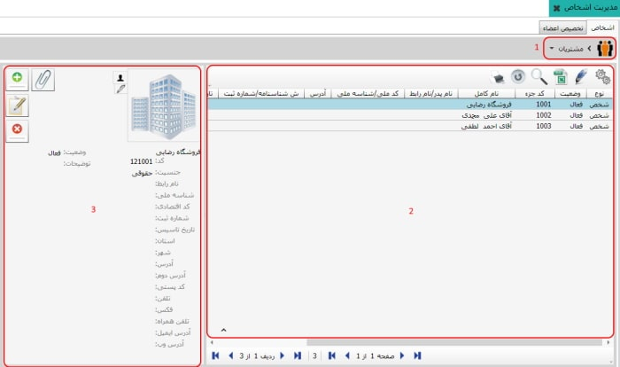
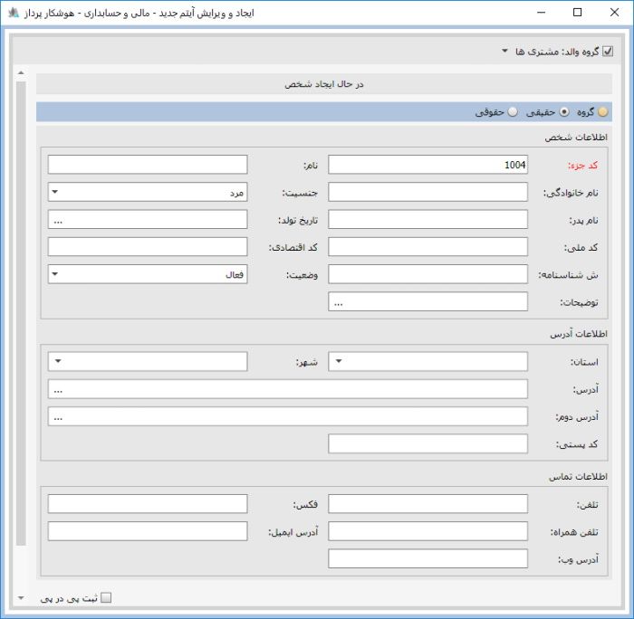

در صورت نیاز به تعریف اشخاص جدید در گروه
تعریف شده می توانید از این گزینه استفاده کنید
با کلیک بر روی این دکمه صفحه زیر باز می شود :
در صورت نیاز به تعریف اشخاص جدید در گروه
تعریف شده می توانید از این گزینه استفاده کنید
با کلیک بر روی این دکمه صفحه زیر باز می شود :
با کلیک روی این منو در نرم افزار صفحه مربوط به آن باز می شود. مشاهده می کنید که صفحه ی « مدیریت اشخاص» دارای دو تب « اشخاص » و « تخصیص اعضا » می باشد، در شکل زیر تب « اشخاص» انتخاب شده است.

در تصویر بالا سه کادر مشخص شده است که در زیر به شرح هر یک می پردازیم
کادر شماره 1:
در این کادر می توانید گروه هایی که در قسمت تعریف گروه های اشخاص
تعریف کرده بودید را مشاهده کنید
کادر شماره 2:
هنگامی که گروه مورد نظرتان را از کادر شماره ی یک
انتخاب می کنید در کادر شماره ی دو لیست افرادی که
در تب تخصیص اعضا به گروه انتخابی تخصیص داده شده اند
نمایش داده می شود
کادر شماره 3:
در این کادر آیکن هایی وجود دارند
که در زیر هر یک را توضیح می دهیم
در صورت نیاز به تعریف اشخاص جدید در گروه
تعریف شده می توانید از این گزینه استفاده کنید
با کلیک بر روی این دکمه صفحه زیر باز می شود :
این صفحه همانند منوی تعریف اطلاعات اشخاص در اطلاعات پایه و مشترک می باشد با این تفاوت که گروه والد را در بالای صفحه انتخاب می کنیم.
با استفاده از این دکمه می توانید اشخاصی را که قبلا تعریف کرده اید ویرایش کنید.
 با استفاده از این دکمه می توانید اشخاص را حذف کنید.
با استفاده از این دکمه می توانید اشخاص را حذف کنید.
 با استفاده از این دکمه می توانید
به اشخاص تعریف شده فایل ضمیمه کنید.
با استفاده از این دکمه می توانید
به اشخاص تعریف شده فایل ضمیمه کنید.
در این تب می توانید اشخاص تعریف شده را به گروه های مورد نظرتان تخصیص دهید تصویر زیر تب تخصیص اعضا را نمایش می دهد

برای تخصیص اشخاص به گروه ها ابتدا از کادر شماره ی یک
گروه مورد نظر را انتخاب کنید سپس از کادر شماره ی دو
شخص مورد نظر را انتخاب کنید حالا روی آیکن
کلیک کنید توجه داشته باشید که اگر یک گروه را تخصیص دهید همه زیرمجموعه های
آن گروه نیز تخصیص داده می شوند
همانطور که مشاهده می کنید فرد مورد نظر در لیست کادر شماره سه اضافه شد
برای خارج کردن از تخصیص ابتدا گروه مد نظر را انتخاب کنید
سپس از کادر شماره ی سه شخص مد نظر را انتخاب کنید
و با استفاده از آیکن
شخص را از تخصیص خارج کنید